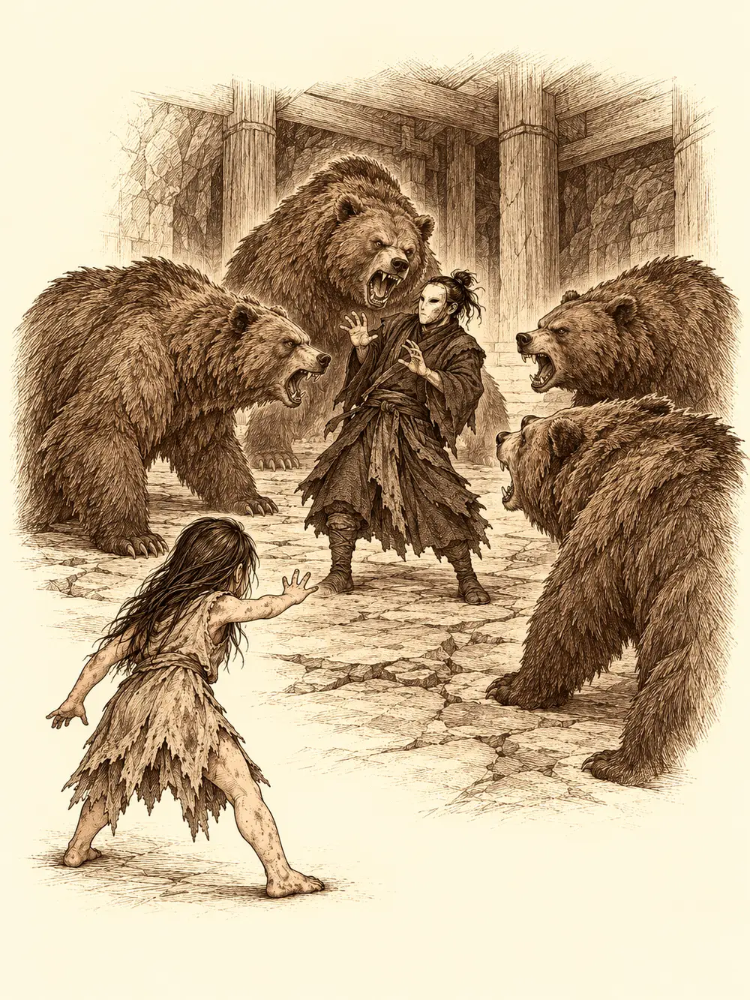

Capítulo 101
Un rescate de pelotas
Libro VII · La Reina Cuervo
Arwen olía un poco menos a bosque. Unos días antes Katari había aparecido por la base de Sho y la había encontrado rebuscando comida, sola otra vez, y entre las dos había pasado algo que nadie supo contar bien: una conversación larga, y después un baño. La niña seguía teniendo tierra bajo las uñas, pero el pelo ya no era una maraña y se dejaba peinar. Katari la cuidaba ahora con un cariño casi de madre, y Aka, que al principio la miraba con prudencia, había empezado a tenerle afecto.
Ikari había pasado esos días con la nariz en el libro de las ruinas. Había copiado lo más importante y lo había enviado a las bases y a los generales: la advertencia sobre la Puerta Negra era clara, pero en ninguna página encontraba cómo frenar aquel mecanismo, ni la explicación completa de lo que los sectarios hacían con los tanuki. Banzo dormía mal. Soñaba con la puerta, con cuervos, con el Shadowfell, y se levantaba con ojeras.
Aquella mañana Shizuka corría por la sala y Arwen la perseguía a cuatro patas, con la lengua fuera, saltando sobre ella como un cachorro y cayendo de bruces cada vez que fallaba. Danifae, sentada en un rincón, se limpiaba los dientes con la punta de una daga y no apartaba los ojos de Arwen. La seguía con la mirada de un lado a otro, como un gato a un pájaro.
Ikari quería pasar por la administración a preguntar por un local que había solicitado y propuso una excursión. Antes de salir, Shizuka metió la cabeza en el baúl de los cazadores, revolvió, tiró cosas por encima del hombro y sacó una bolsa atada con una cinta.
"Toma, Arwen. Son caramelos. No se acaban nunca".
Arwen le dio uno a Shizuka y se metió en la boca todos los demás que cupieron, hasta que tuvo los carrillos como una ardilla. Cuando vio que la bolsa seguía llena, se le iluminaron los ojos verdes.
Por la calle, Arwen sintió que algo se le acercaba por detrás para agarrarla. Se dio la vuelta sin mirar y mordió. Era la mano de Danifae. La niña tiró de ella gruñendo como un perro, y la drow empezó a ver doble: de pronto había dos niñas borrosas donde antes había una. Shizuka le dio a Arwen un coscorrón en la cabeza.
"No se muerde. No".
Arwen soltó la presa y se escondió detrás de Shizuka, gimoteando. Señaló a la drow.
"Venir por detrás de Arwen".
Danifae buscó algo donde apoyarse. Banzo le ofreció el hombro. Ella le explicó, mareada, que la niña tenía su esfera y que solo quería ayudarla a expulsarla. Se fue a ver a un sacerdote.
Los demás terminaron en la taberna de Ushi, que después de lo ocurrido había vuelto a dejarles entrar porque Rua se lo había pedido. Ushi los miró como quien mira llegar una tormenta y fue a la cocina a prepararles comida. Mientras esperaban se abrió la puerta y entró un hombre con una cesta de mimbre en la cabeza que le tapaba la cara entera.
Shizuka y Arwen se plantaron delante de él. La kender lo miró hacia arriba mucho rato. Arwen le olisqueó los zapatos.
"¿Ustedes quieren algo de mí?", preguntó la cesta. Y luego, a los adultos: "¿Quién es el padre? Lo digo por saber a quién dirigirme".
Se llamaba Caniza. Era un monje errante de los que se cubren la cabeza con un cesto, explicó; lo llevaba para purgar los pecados de su pasado, y sí, podía ver a través del mimbre. Arwen le trepó por el cuerpo hasta asomarse a las rendijas. Shizuka cogió una cesta del suelo, se la puso en la cabeza, anunció que ella también estaba purgando pecados y fue a estrellarse contra un taburete. Caniza la sujetó antes de que se llevara por delante otra mesa.
"Normalmente esto te lo dirían tus padres, pero como tus figuras de autoridad ahora mismo dejan bastante que desear, te lo diré yo. No te estampes contra las cosas".
"Mis padres están muertos".
"Los míos también. Es una porquería, ¿verdad? Así que tenemos que decírnoslo unos a otros".
Shizuka se presentó como la líder de los cazadores de Sho. Arwen, desde lo alto de la cesta, tamborileaba con las manitas.
Llegó la comida. Arwen se lo comió todo en un suspiro, con las manos sucias, se quedó con la tripa redonda y soltó un eructo que retumbó por toda la taberna. El suelo tembló. Se cayeron los vasos. A todo Sho le tembló el suelo medio segundo. Banzo le dio el resto de su plato, por ver, y la niña se lo comió y eructó otra vez, más fuerte. Se cayeron taburetes, velas, una lámpara del techo, y la puerta se descolgó de sus goznes.
Ushi apareció tambaleándose.
"¿Pero qué demonios estáis haciendo, malditos cazadores?".
Banzo lo agarró y le aseguró que era un terremoto, réplicas, nada que ver con ellos.
Entonces volvió Danifae con la mano vendada. Se sentó, sacó una espada corta y la puso sobre la mesa.
"¿Vamos abriendo a la niña o seguimos con los terremotos?".
Arwen se escondió detrás de Ikari. Caniza, Banzo y el tanuki se pusieron entre las dos sin necesidad de ponerse de acuerdo. Danifae explicó con fastidio que la pequeña se había tragado una esfera que le pertenecía. Caniza le sugirió un purgante. La drow apoyó la punta de la espada en el pecho de Banzo, solo apoyada, sin pinchar.
"Bueno. Lo dejaremos estar por ahora".
Con los temblores, a Ikari se le había caído el libro de las ruinas. Danifae lo recogió del suelo antes que nadie. Le hizo una caricia al tanuki bajo el hocico, con aquella voz suya, y de pronto a Ikari le pareció lo más natural del mundo que su amiga lo leyera. Ella lo hojeó usando las manos del tanuki como atril, sacó una libreta de notas propias y puso encima un mapa que había dibujado en algún viaje. Coincidía con uno de los del libro: el mismo cruce, la misma montaña.
"Me parece que esto es el mismo punto. ¿Queréis hacer algo interesante?".
Ikari tardó en entender por qué había dejado que Danifae le tocara el libro. Alguien le dijo a la drow lo que pensaba de ella. Ella se encogió de hombros.
"Ay, si tú supieras, cariño. Si tú supieras".
Arwen se transformó en loba, se cargó a Shizuka en el lomo y la llevó de vuelta a la base. Volvió enseguida. Los demás partieron con la niña hacia el lugar del mapa.
Por el camino, Danifae volvió a acercarse a Arwen con un arma en la mano. Caniza le plantó delante la hoja de su naginata.
"Retroceda cinco pasos".

Ella levantó las manos con una inocencia que nadie se creyó y le apartó el arma con un dedo. Más adelante lo intentó de nuevo. Banzo le exigió que respetara a la niña, e Ikari levantó las manos: le brillaron los diez dedos y Danifae se quedó rígida, paralizada, con una sonrisa congelada. La ataron a un árbol. Ikari se acercó a quitarle la daga, pero ella ya se estaba soltando.
"Si no queréis saber dónde está el templo que quizá os salve la vida... Me necesitáis".
Siguió andando y les dio la espalda. Banzo se inclinó hacia Ikari.
"Si vuelve a intentar algo con la niña, voy a atacar. Con todo lo que haga falta".
Al final del camino había una iglesia vieja, comida por la vegetación, con marcas en las paredes y en las puertas. Caniza reconoció palabras de protección, de resurrección, de nigromancia. Arwen se acercó a unos cactus que crecían junto a la entrada, los escuchó y fue traduciendo con sus palabras de niña: gente con máscaras, gente como Danifae que venía con las máscaras, nombres de Otakemaru. Nadie más oía nada.
Por fuera el templo estaba en ruinas; por dentro, cuidado. Había bancos, un altar con velas y candelabros, y en las paredes frescos de yokai, algunos que ya conocían.
"Esta era una de las estatuas de la Puerta Negra", dijo Ikari ante una figura con cabeza de caballo.
Arwen olfateó al tanuki para aprenderse el olor y siguió el rastro hasta una puerta cerrada. Se convirtió en cucaracha y pasó por debajo. Dentro había mesas funerarias y, junto a una cruz grande, una corriente de aire. Intentó forzar la cerradura con las patas y no pudo, así que Caniza echó la puerta abajo de un golpe de naginata. En otra sala, la cucaracha encontró un busto que no se movía de su estante. Caniza lo giró y la cruz se deslizó a un lado. Detrás había unas escaleras.
Abajo olía a sangre seca. Había mesas con instrumentos, celdas y una máquina que no dejaba dudas sobre su uso. Dos sectarios trabajaban inclinados sobre algo. Ikari intentó paralizarlos a ambos y solo atrapó a uno, que Banzo mató antes de que nadie pudiera preguntarle nada. Otros dos cayeron bajo la magia sin que diera tiempo a interrogarlos. Las máscaras que llevaban tenían un símbolo que Ikari conocía bien: el de Otakemaru. Caniza registró los cuerpos y sacó ciento noventa y una monedas.
En una biblioteca encontraron registros de cuentas y, escondidos entre ellos, libros de nigromancia y de invocación. Se llevaron los que más miedo daban, sin tiempo de leerlos.
Arwen volvió de explorar transformada otra vez en niña, pálida, temblando. Hizo un círculo en el suelo con el dedo.
"Hombres con máscara. Círculo. Mapache en el centro".
Señaló a Ikari.
"Uno como tú".
En el pasillo, unos pinchos brotaron del suelo y atravesaron los pies de los que iban delante antes de volver a esconderse. Solo entonces Danifae se agachó, palpó la pared y desactivó el resto.
"Las trampas. No hay forma de esquivarlas".
"¿Y qué te cuesta avisar?", le gritó Banzo.
"Después de atarme a un árbol".
Ikari tocó a Banzo y el goliat se sintió ligero como el viento. Abrieron la puerta de una patada. Un rayo los recibió y les recorrió el cuerpo. Al fondo, un hombre se reía.
"Vaya. Tenemos visita".
En el centro de un círculo había un tanuki atado al suelo, abierto desde el cuello hasta el vientre. Estaba muerto. Por un momento Ikari creyó reconocer a Mosto, pero aquel era otro de los suyos.
El jefe de los sectarios llenó la sala de rayos, paralizó a Banzo a mitad de carrera y levantó una nube de veneno que se arrastraba por el suelo. Danifae apareció en un parpadeo junto a uno de los sectarios, le hundió la espada y lo dejó pegado al suelo por una tela de araña que brotó del acero. Arwen deshizo con un gesto la magia que tenía inmóvil a Banzo y, entre los heridos, hizo surgir un ciervo de luz cuyas chispas cerraban la carne al tocarla. El goliat agarró al jefe con todo el cuerpo. El hombre lo tocó con un dedo y la piel de Banzo empezó a pudrirse; él siguió apretando, mareado, hasta meterle la cabeza en un brasero.
Ikari cayó en la nube y no se levantó. Arwen corrió hacia él, lo arrastró como pudo hasta donde chisporroteaba la luz del ciervo y se quedó encima, sacudiéndolo.
"Ikari, despierta".
El tanuki abrió los ojos. Caniza gastaba toda su magia en cerrar las heridas de los demás mientras él mismo apenas se tenía en pie, y Danifae, en medio del caos, iba acabando con los sectarios uno por uno. Ikari, todavía tumbado, le devolvió a Arwen el favor y la ayudó a recuperar fuerzas. Al final, Banzo le cortó la cabeza al jefe. El último sectario soltó las armas y se arrodilló.
Arwen se acercó despacio a los restos del tanuki. No parecía asustada. Se llevó las dos manos al pecho, cerró los ojos y entonó un canto en voz baja. El cuerpo se deshizo en una luz que subió hacia el techo y desapareció. La niña se quedó mirando hacia arriba.
"Volver al bosque. Volver a vida".
Hizo un círculo con el dedo, como explicando que el alma había vuelto a empezar. Ikari le dio las gracias por eso y por sacarlo de la nube, y ella se le abrazó con tanta fuerza que no lo dejaba respirar.
El sectario, al que nadie había atado, aprovechó para lanzar un último conjuro contra ellos. Arwen, furiosa, hizo aparecer cuatro osos que lo rodearon gruñendo. Danifae entró en el círculo, le sonrió y se le acercó al oído. Al poco, el hombre señaló la sala de al lado.
Las llaves estaban en una mesa. En las celdas había tanuki, flacos, sedientos, apretados unos contra otros, y cuando vieron a Ikari corrieron a abrazarlo hasta formar una sola bola de pelo. Eran de su poblado. Parte de su familia seguía viva. Les dieron agua. Arwen se tiró encima de todos.
Danifae ya tenía la espada en el cuello del sectario cuando Banzo la detuvo.
"Este me lo llevo a palacio".
Le golpeó la cabeza contra el suelo hasta dejarlo sin sentido, lo envolvió con la cadena del arpón, le metió un trapo en la boca y se lo cargó al hombro. Los osos no se separaron de él.
Salieron a la luz con los libros, la cabeza del jefe, un sectario encadenado y un tropel de tanuki que no paraban de hablar. Caniza caminaba apoyado en el hombro de alguien porque ya no le quedaba nada, y Arwen iba de cabeza en cabeza, de la de Banzo a la de Ikari y vuelta, hasta que se quedó dormida sobre el lomo de uno de los osos camino de Sho.